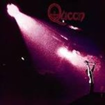

Inloggen
Willekeurig weetje
Home
Weetje van de dag
• Op 13 juli 1973 kwam het eerste album van de band Queen uit, het album luidde naar de naam: Queen. Op deze lp (Langspeelplaat) stonden o.a. Keep Yourself Alive, Doing All Right, Great King Rat en My Fairy King.

Bron: Wikipedia.com